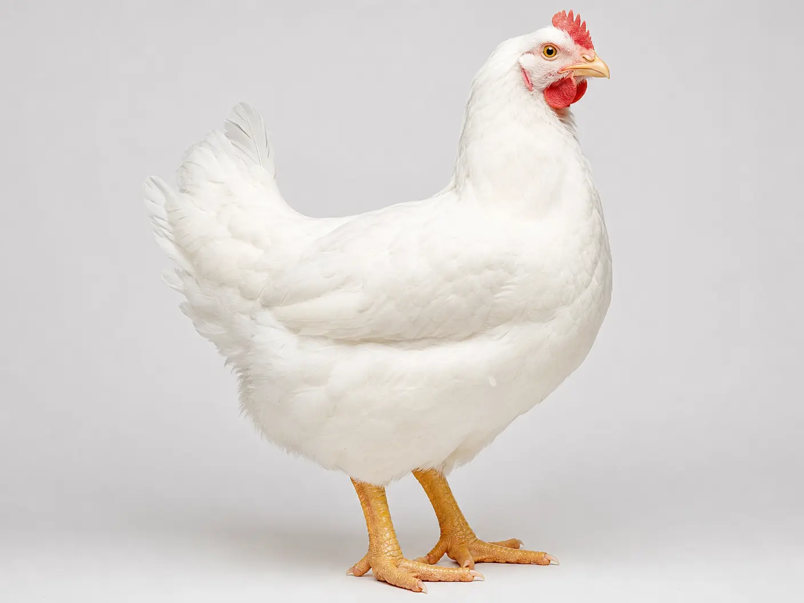
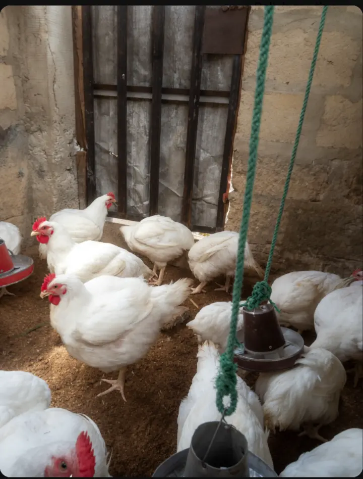
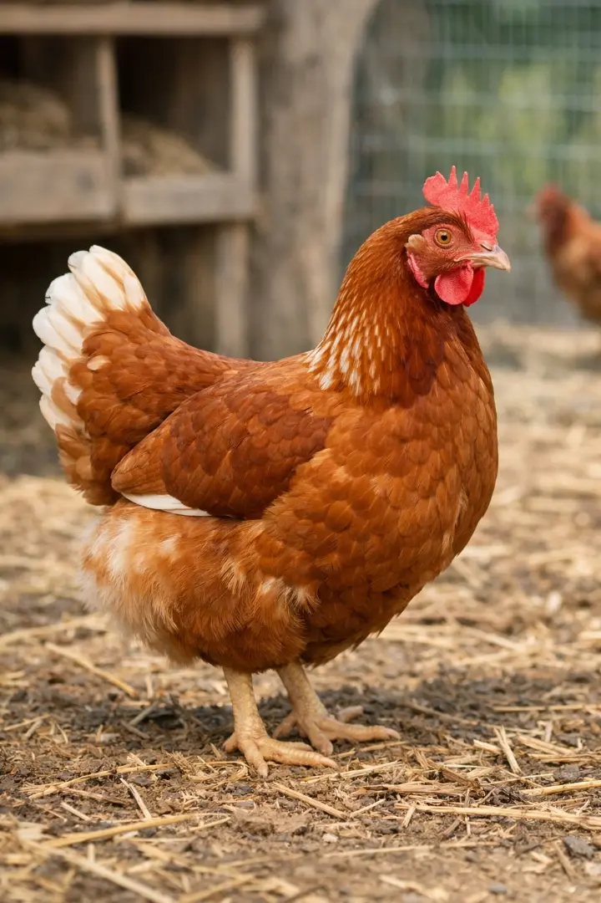
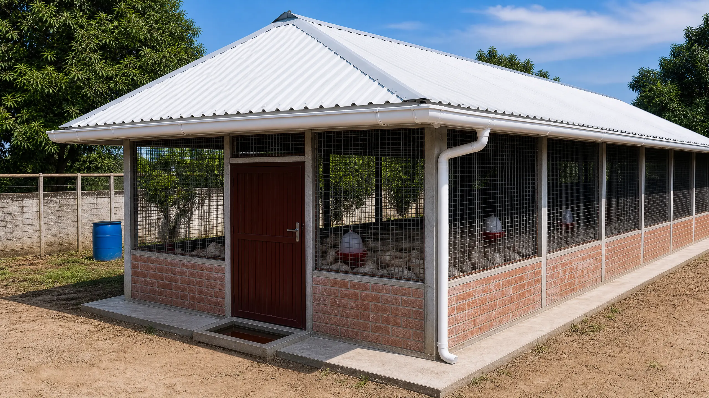
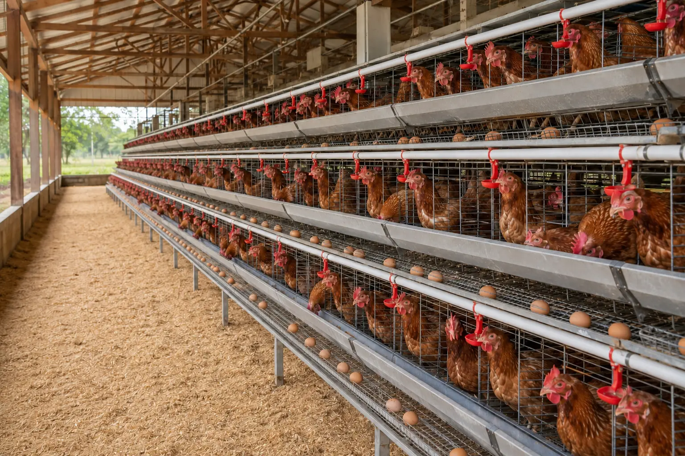

The Poultry Tip Site
The Poultry Tip SiteBroilers vs Layers: Which One Should You Choose?
If you are getting into poultry farming, you will quickly hit a decision that shapes your budget and workload: Should I raise broilers or layers?
Getting it wrong can cost you a whole lot. While both are chickens, they require completely different budgets, daily management, and cash flow strategies.
If you are struggling to make up your mind, you are in the right place. This guide compares the two side by side, walks through the day-to-day management of each, and ends with guidance on how to choose the path that fits your pocket and your goals.
What are broilers?
Broilers are chickens raised mainly for meat production. They're known for their fast growth rate and efficient feed conversion, reaching market weight in just 5-8 weeks under good management. Common strains include Cobb 500, Ross 308 and Arbor Acres Plus. They are supplied in Nigeria by companies like Olam (Chikun), Agrited, Sayed, Zartech, Chi, Amo, Fidan and others. While female broilers are biologically capable of laying eggs, commercial broilers are raised purely for meat and are typically slaughtered long before reaching laying age.


What are layers?
Layers are chickens raised mainly for egg production. They're known for their steady, long-running output rather than fast growth, typically starting to lay between 18–22 weeks of age. A healthy hen can produce around 300 eggs in her first year under good management, with egg output staying strong for roughly 12 to 18 months before gradually declining. The exact point varies by flock, but once production drops enough that it no longer justifies the cost of keeping the birds, most farmers retire them.
The most popular breed among Nigerian farmers is the Isa Brown, valued for its consistent, high-yield laying and its ability to adapt to different housing systems, from deep litter to battery cages. It is supplied in Nigeria by hatcheries such as Amo Farm Sieberer Hatchery, Zartech and Chi. Isa Brown is a light-bodied, egg-type strain, so even after a year or more of laying, a mature hen typically weighs only about 2 to 2.2 kg. Layer feed is formulated with extra calcium and balanced protein to support egg formation rather than fast weight gain. When production drops off for good, the birds are usually sold or slaughtered for meat.

A note on force molting
Force molting is a practice where a flock is deliberately stressed to trigger a molt, so the hens shed and regrow their feathers and their egg production resets. It is usually done by withdrawing feed for a period of days while clean water is always available. It is not for beginners, so keep the following in mind:
- Only healthy, well-managed flocks should be molted. Weak or diseased birds may die.
- Expect heavy weight loss. There may also be some mortality.
- Production after a molt usually recovers, but the second laying cycle generally peaks lower than the first.
- Feed withdrawal is discouraged under some animal welfare standards.
Quick Comparison: Broilers vs Layers
| Broilers | Layers | |
|---|---|---|
| Capital needed | Lower | Higher, because birds must be housed and fed for months before income starts |
| Time to first income | 5–8 weeks | Laying starts around 18–22 weeks |
| Income pattern | One lump sum per batch | Steady income from regular egg sales |
| Brooding period | 2 weeks | 5 weeks |
| Vaccination | Short schedule (4 vaccines) | Longer, more involved schedule |
| Technical knowledge | Lower | Higher |
| Main risks | Chicken price swings at selling time; high feed costs | Long feed bill before the first egg; disease exposure over a long cycle; feed and egg price swings |
| Ease of exiting | Easier | Harder |
Broiler vs Layer Management
Great differences exist in the management practices for broilers and layers due to their distinct purposes and physiological characteristics. We shall explore these differences in detail.
Housing
Broilers are normally housed in a brooding house for 2 weeks. Afterwards, they can be transferred to a rearing pen (or they could remain in a brooding house that has been converted to a rearing pen) till they are slaughtered. The brooding house is always well covered to regulate how much air enters, whereas the rearing pen is exposed and very well ventilated. For layers, a similar brooding house and rearing pen can be used. Layers remain in the brooding house for 5 weeks. They could remain in the rearing pen all throughout their lives, but some farmers transfer them to a battery cage, or bring battery cages into the rearing pen, where the layers remain from the 16th week till they are disposed.
Note: A poultry house should be constructed in an east-west direction (long axis running east to west). This orientation reduces the amount of direct sunlight entering through the side walls, helping to keep the house cooler, minimize heat stress on the birds, and allow for better cross-ventilation.



Brooding
Both are brooded the same way. The only difference is that broilers are brooded for a shorter period (2 weeks) while layers are brooded for 5 weeks. This is because broilers develop feathers much faster than layers.
Read more about broodingFeeding
The feed used for broilers differs from that of layers.
Broilers: Broilers typically get super starter for the first four weeks. For some feed brands like Newhope, Ultima and Breedwell, super starter is used for just the first two weeks, then starter for the next two weeks. Finisher feed is introduced gradually over the last few days of week 4 (days 26 to 28), mixing it with the starter or super starter in increasing proportions. From day 29 (week 5) until they are sold or slaughtered, the birds are fed finisher only. Always follow your feed brand's feeding guide, as programmes differ between brands.
Read more about broiler feedingLayers: Chick mash should be fed for 7 weeks. After the 7th week, grower mash is fed until the flock reaches 10% lay (i.e., the number of eggs laid per day equals 10% of the total flock size). Once 10% lay is reached, the feed is switched to layer mash for the rest of the laying period.
Vaccination
Vaccination programmes vary with location and disease pressure in your area. Use the schedules below as a guide and have your veterinarian or hatchery confirm the programme for your farm.
Broilers are typically given the following vaccines:
- Gumboro vaccine (1st dose) — via drinking water, Day 7
- Lasota vaccine (1st dose) — via drinking water, Day 14
- Gumboro vaccine (2nd dose) — via drinking water, Day 21
- Lasota vaccine (2nd dose) — via drinking water, Day 28
Note: Chlorinated water can inactivate live vaccines. Add milk to the drinking water (preferably powdered skim milk) before mixing in the vaccine to neutralize the chlorine's effect.
Read more about vaccination in broilersWhereas layers are typically given the following vaccines:
- Marek's disease vaccine — usually given at the hatchery on day-old chicks
- Gumboro vaccine (1st dose) — administered via drinking water, Day 7
- Lasota vaccine (1st dose) — administered via drinking water, Day 14
- Gumboro vaccine (2nd dose) — administered via drinking water, Day 21
- Lasota vaccine (2nd dose) — administered via drinking water, Day 28
- Infectious bronchitis vaccine — administered via drinking water, Day 35
- Fowl pox vaccine — administered through the wing web via injection, Day 42
- Komarov vaccine — administered subcutaneously (back of the neck) via injection, Day 56
- Coryza vaccine — administered subcutaneously or intramuscularly via injection, Day 63
- 2 in 1 Vaccine which contains Newcastle disease vaccine and Infectious bronchitis vaccine - administered intramuscularly via injection, Day 70
- Fowl typhoid vaccine — administered intramuscularly via injection, Day 84
- Repeat 2 in 1 vaccine (optional) — administered intramuscularly via injection, Day 98
- 3 in 1 vaccine which contains Newcastle disease vaccine, Infectious bronchitis vaccine, and Egg drop syndrome vaccine - administered intramuscularly via injection, Day 112
Advantages of Each Type
Broilers and layers each have their own advantages, depending on your goals and resources. Here are some key advantages of each type:
Advantages of raising broilers over layers
- Broiler production is not as capital intensive as layer production.
- Broilers reach market weight faster, allowing for quicker turnover and cash flow.
- Broilers generally require less technical knowledge and long-term management than layers.
- The shorter production cycle means broilers are exposed to diseases for a shorter period.
- It is easier to enter and exit the business of raising broilers than layers.
Advantages of raising layers over broilers
- Layers provide a regular source of income through egg sales over many months.
- Eggs are a staple food item with steady everyday demand, which can make layer income more predictable than a one-off batch sale.
- Layer farming allows for diversification of products, such as selling eggs and spent hens for meat.
- Income is spread over many months instead of arriving in one lump sum per batch.
Note: Neither business is risk-free. Feed is the biggest cost in both, and feed, egg and chicken prices can swing considerably, so check current local prices before you invest.
Which Should You Choose?
Choose broilers if you have limited capital, want quick returns, are new to poultry, or want the flexibility to start and stop easily. Just plan your selling early, because you need buyers ready when the birds reach market weight.
Choose layers if you have more capital, can wait months before your first income, are willing to learn a more detailed management and vaccination routine, and prefer regular income over lump sums.
Many farmers start with a small batch of broilers to learn the basics and build capital, then move into layers later. Whichever you choose, start small, keep records of your costs, and speak to an experienced farmer or a veterinarian in your area before you begin.